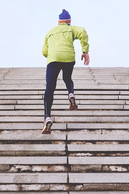

About me:
Training is my calling
So as you probably already know im a sports junkie. this is something i have done since i was little and kept it going in my real life. the diffrent activitys i do is something i wanted to talk about and use this blog for to inspire others. It is something i really burn for and make me feel more energy in the everyday stuff i do. even though some of the things i write about in the blog is probably a little unkown for some i hope you get inspired!.